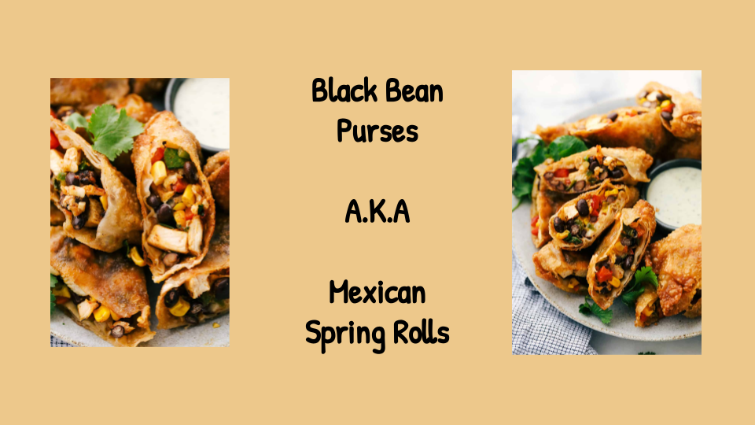
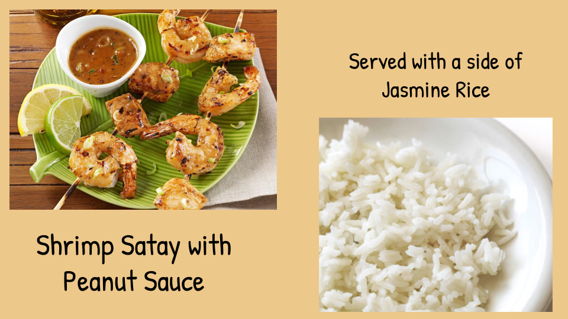
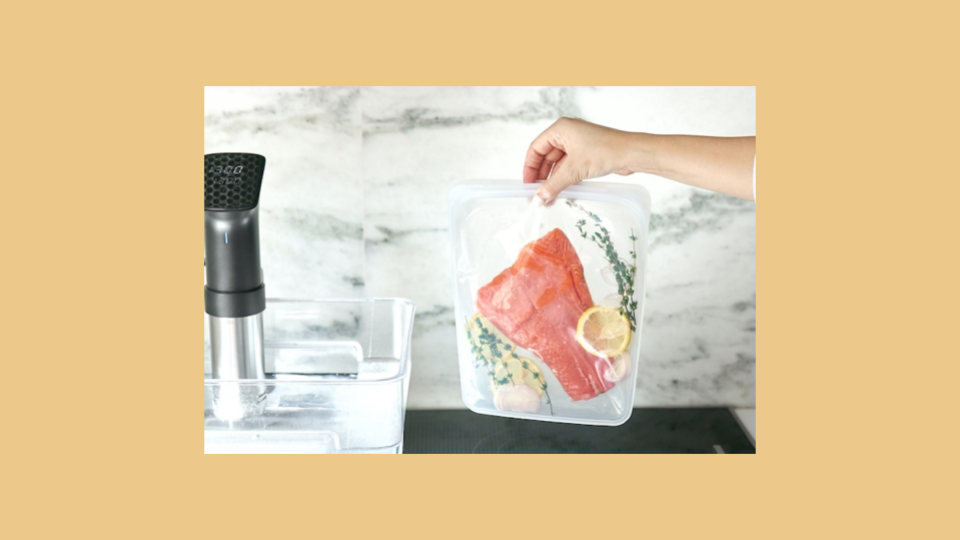
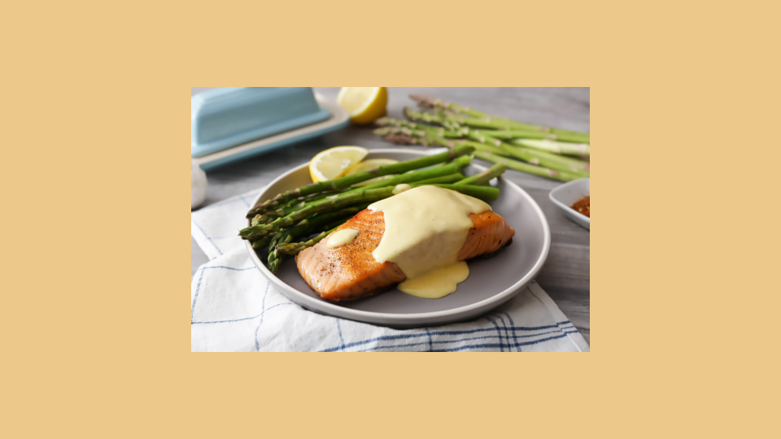

Our chef has been busy putting together the perfect menu for the summer months. Stop by to try these appetizers and main courses while the days are still long.
Spicy Black Bean and a blend of Mexican cheeses wrapped in sheets of phyllo and baked until golden. $3.95
Layers of light lump crab meat, bean and corn salsa, and our handmade flour tortillas.$7.95

Skewers of shrimp marinated in lemongrass, garlic, and fish suace then grilled to perfection. Served with a spicy peanut sauce and jasmine rice.$12.95
Tender chicken slow-roasted on the rotisserie, flavored with spicy fragrant jerk sauce and served with fried plantains and fresh mango.$12.95
This week I am extremely excited about a new cooking technique called sous vide.
In sous vide cooking, you submerge the food (usually vacuum-sealed in plastic) into a water bath that is precisley set to the target temperature you want the food to be cooked to.
In his book, Cooking for Geeks, Jeff Potter describes it as "ultra-low-temperature-poaching"
Next month, we will be serving Sous Vide Salmon with Dill Hollandaise. To reserve a seat at the chef table, contact us before November 30.
blackgoose@example.com
555-336-1800
Warning: sous vide cooked salmon is not pasteurized. Avoid it if you are pregnant or have immunity issues.
All Content Copyright © 2017 Black Goose Bistro & Jennifer Robbins